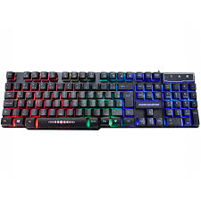

Um teclado para jogos (teclado gamer) é um teclado projetado apenas para os jogos. Ele possui um número limitado de teclas originais de um teclado padrão e elas são organizadas de maneira mais ergonômica para facilitar o pressionamento de teclas de jogo rápido e eficiente. As teclas comumente usadas para jogos em um computador são "W", "A", "S", "D", e as teclas próximas e adjacentes a essas teclas. Essas teclas e o estilo uso de um teclado são chamados de WASD. Um teclado para jogos apenas otimizará o layout WASD, mas Também conterá funcionalidades extras, como controle de volume, Esc. tecla e as teclas F1-F12.
 Voltar